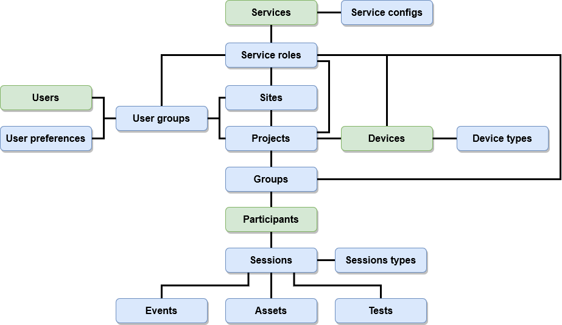

Database Structure
An SQL database, currently PostgreSQL, is at the core of the OpenTera platform. The database stores all the data and establish all the relationship between the different database objects in the system.
Database objects
The following image shows a high level overview of the different objects used in OpenTera and their relationship to each other.

There are 4 objects that are considered to be core objects (or user types):
Users: the main users of the platform. In a typical application, they are the ones who will need to visualize the data, create and manage participants, projects and sites and interact with the other core objects. As such, they have access to almost every database objects from their API, depending on their access levels.
Participants: the participants who receive a service from the OpenTera platform. Managed by one or multiple users, they are usually the ones who interact with the system, but have a very limited access to the platform. Their API is limited by design, and they can only interact with objects that are directly related to them.
Devices: devices represents physical devices, whether sensors, robots or any other devices, that can feed data into OpenTera or be involved in a session. Similar to the participants, they can only interact with objects directly related to them. Each device has an associated device type (with an optional device subtype) which can categorize each device and be used to implement specific behavior based on that type.
Services: services are the main components of OpenTera. A service can be defined as a stand-alone software interacting with OpenTera in multiple ways, and providing specific features, data analysis, data storage, data visualization and controls to meet the needs of specific projects. Services usually run on the same server, but that is not a requirement.
The other objects are the following:
Assets: assets represent various data files, be it device data, pictures, videos or any other kind of data. Usually, an asset involve storage of a physical file, though it might also represents a processing result or a report. Each asset needs to be associated to a session.
Events: events happens in a session. They can include, to only name a few, session start/stop, specific time stamping and/or invitees leaving or joining a session. Events are timestamped and associated to a session.
Groups: a group is a logical way to organize participants. A participant doesn’t need to be part of a group, and their use is optional. Groups are similar, in a way, to file folders but for participants.
Projects: each project can represent either a project, a group of participants with a common categorization, a team or any logical association making sense in the context of use of the platform. Each participant must be associated to a project. In the main OpenTera service, access roles are defined as such that an user group can be ‘admin’ or ‘user’ in a project, granting different access level depending on that role.
Sites: a site can represents a physical site, a team that shares common projects or any logical association making sense in the context of use of the platform. Each site can have one or more projects associated to it. In the main OpenTera service, access roles are defined as such that an user group can be ‘admin’ or ‘user’ in a site, granting different access level depending on that role.
Service configs: specific configuration of a service that will be sent to it when a session requesting that service is created. This can be a general configuration, or a specific configuration linked to an installation (be it hardware or software) ID. For example, the currently video source could be used as a specific configuration as it is machine-dependent (since a specific camera might be available only on this system and not on another one).
Service roles: the roles that a specific service can have. Those roles can be assigned to user groups, participant groups or devices. See service access for more information about service roles.
Sessions: sessions are the main organizational units for collected data. Whatever the kind of data is an event, a device data or any other, must be associated to a session. A session can includes participants, users and devices as invitees, and can involve or not a particular service.
Session types: each session needs to be of a specific type. The session type can be used to simply categorize a session, but can also specify some session parameters to adjust the layout of the session, or some features available in that session (for example, to allow video recording in a session using the VideoRehab service).
Tests: Tests represents answers to specific questions. They are attached to a session and are based on a test type, which provides the structure of the test (usually questions composed of text fields, checkbox, combobox, etc.).
Tests types: Tests type defines a library of tests. Each test type must provides either a web-based front-end display or be structured in a standardized form structure, in which case the client will need to generate the appropriate display based on that structure.
User groups: user groups define which access are available for users of that group. In the main OpenTera service, such access are linked to site and project roles. A user can be part of multiple user groups. When computing access, the higher access level always overcome the lower access level.
User preferences: preferences can be stored on the server for each specific client. This allows to have the same preferences on each of the specific installation of that client, even if not on the current system.
Database schema
The following image displays the current database schema.

Objects models
OpenTera uses an object relational mapper (ORM) based on SQLAlchemy. Database upgrades are managed using Alembic.
Each of the database object has an associated model, which defines the structure of the underlying database table and relationship, and also allows to directly manipulate those objects from the code without having to execute SQL queries directly from the code.
Objects structure
Each object has its own model. Those model provide the database structure underlying each object, and provide some utility functions to query more information or related information from a specific object.
The model doesn’t provide any access-level filtering, and is not considered to be safe in that regard if objects are used without using the database manager (see below).
Base model
Each object model inherits from a base model. That base model provides helper functions that can be re-implemented, if needed, by the child object. This also ensures that each model has at least some common basic functions, easing the development and readability of codes. The following functions are part of the base model:
to_jsonandfrom_json: serialize / deserialize the object in a JSON-formatted string. The function browse each of the properties of the object (including relationships) to generate that string or to create an object with values based on that string. A list ofignore_fieldscan be provided if not all fields of an object need to be serialized / deserialized. Usually, an inherited model will filter out their relationships information, as this could lead to circular references.clean_values: removes all values, in adict, that are not part of that particular objectget_count: returns the current number of entries in the underlying table in the database for that objectupdate,commit,insertanddelete: executes the operation with that object. Those are helper functions and allows for customization in inherited models.
Naming convention
The following naming convention is used when defining a new model:
Model name starts with a service identifier (for example
Terais used for the main OpenTera service), followed by the data object nameUnderlying table name starts with a
t_value, and contains the object name. If spaces are required, they are replaced with_A main
idneeds to be defined for each object. Thatidshould start withid_followed by the object nameRelated
idscoming from the relationships also follow the above conventionEach of the model property (column) should be prefixed with
<model_name>_Each of the model relationship should also be prefixed with
<model_name>_and followed by the related object name
Version conflicts
To prevent version conflicts at the database level, a column version_id is automatically added by the BaseModel to
each table. On each update or insert query, that column is timestamped with the current time. By doing so, if
another operation is started while the previous one is in progress, the second operation will fail as the data integrity
will not be respected.
Database manager
Inside the Database module, a database manager was created to manage the database connection, to generate events when database objects are edited and to provide access verification on objects when required. The database manager also creates the default database (when detecting that some tables are not present) and database upgrade (using Alembic).
Access verification
Instead of manipulating database objects directly, an additional layer was build to filter queries and thus restrain the information returned depending on the access levels. Those access objects are available directly inside the Database module